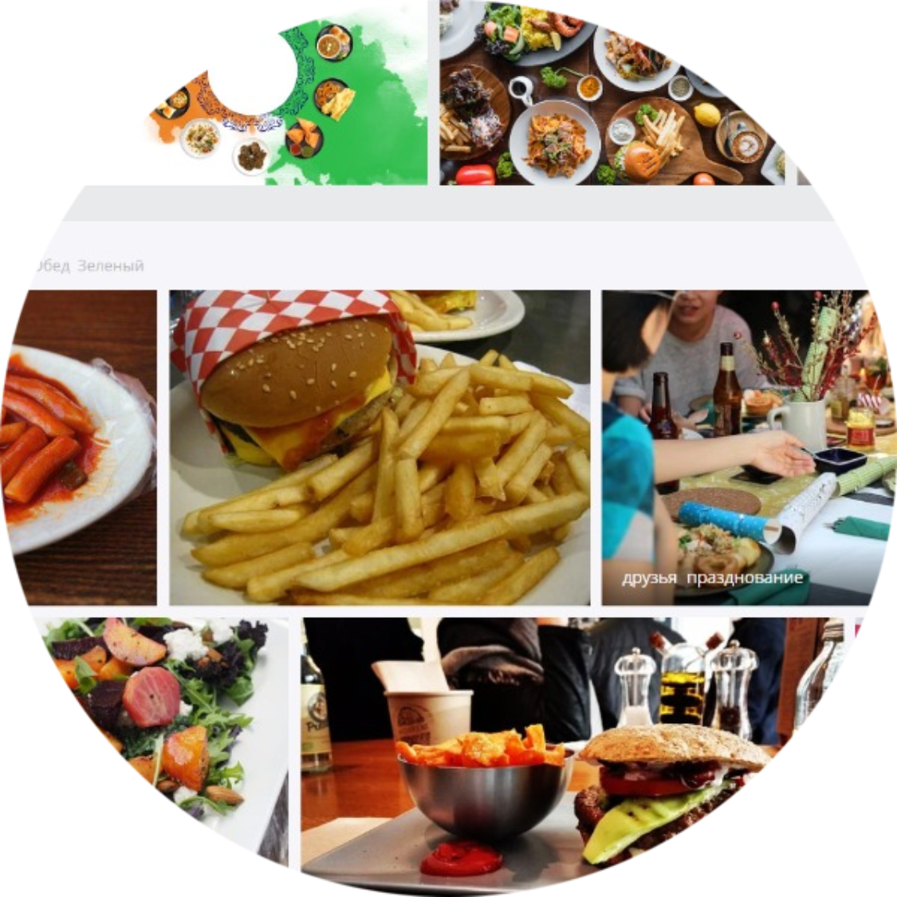

Примітка від Food Safety Team: повернутись на головну сторінку ви зможете, натиснувши
на іконку праворуч :)


ПУБЛІКАЦІЇ ТА ДИСКУСІЇ
Статті наших авторів відповідно до проблематики якості та безпечності харчової продукції в нашій країні та у світі.
Автор статті, тема статті, дата публікації
Автор статті, тема статті, дата публікації

Автор статті, тема статті, дата публікації

CONTACTS
Phone: +380954552516
E mail: office@ifs.pp.ua
SITE MAP
- Main page - ГОЛОВНА СТОРІНКА
- Consult - КОНСУЛЬТАЦІЇ З ВПРОВАДЖЕННЯ СИСТЕМИ IFS FOOD
- Audit - ПІДГОТОВКА ДО СЕРТИФІКАЦІЙНОГО АУДИТУ
- Search - ПОШУК АУДИТОРІВ ТА СЕРТИФІКАЦІЙНИХ КОМПАНІЙ
- Ready - САМОКОНТРОЛЬ ГОТОВНОСТІ ДО СЕРТИФІКАЦІЙНОГО АУДИТУ
- Third party - АУДИТ ПОСТАЧАЛЬНИКА ТРЕТЬОЮ СТОРОНОЮ
- Implementation - ІНФОРМАЦІЯ СТОСОВНО ВПРОВАДЖЕННЯ СИСТЕМИ
- Support - ДОКУМЕНТАЦІЯ СТОСОВНО ПІДТРИМАННЯ СИСТЕМИ
- DSM-RSM - ІНСТРУМЕНТИ МЕНЕДЖЕРА СИСТЕМИ ЯКОСТІ ТА БХП
- Publications- ПУБЛІКАЦІЇ ТА ДИСКУСІЇ
- About us - ПРО НАС
WE CAN
- Зробимо вашу систему якості та безпечності харчової продукції більш ефективною
- Зменшимо витрати на сертифікацію
- Побудуємо "з нуля" систему якості та безпечності для будь-якого підприємства